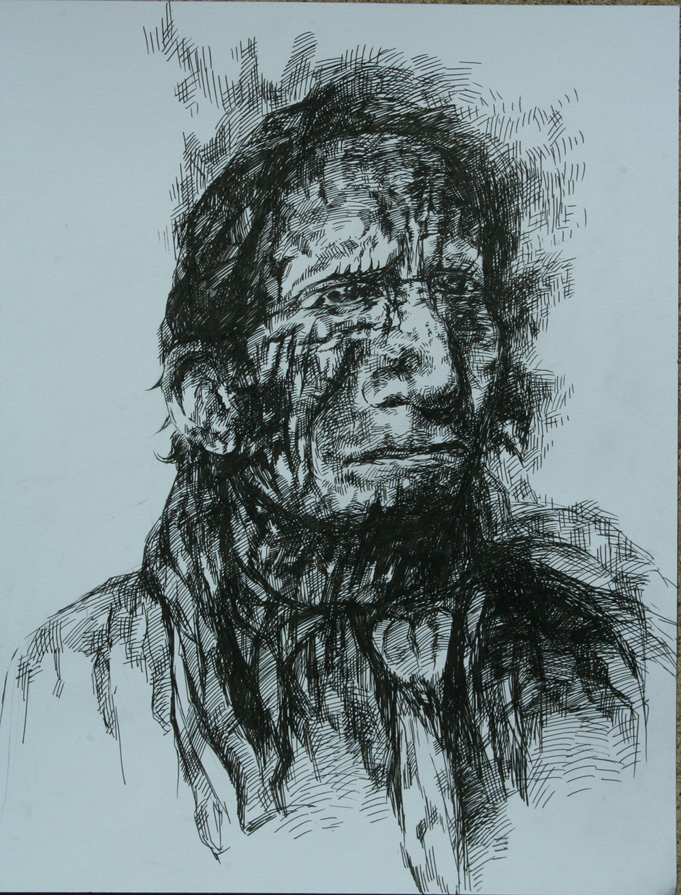
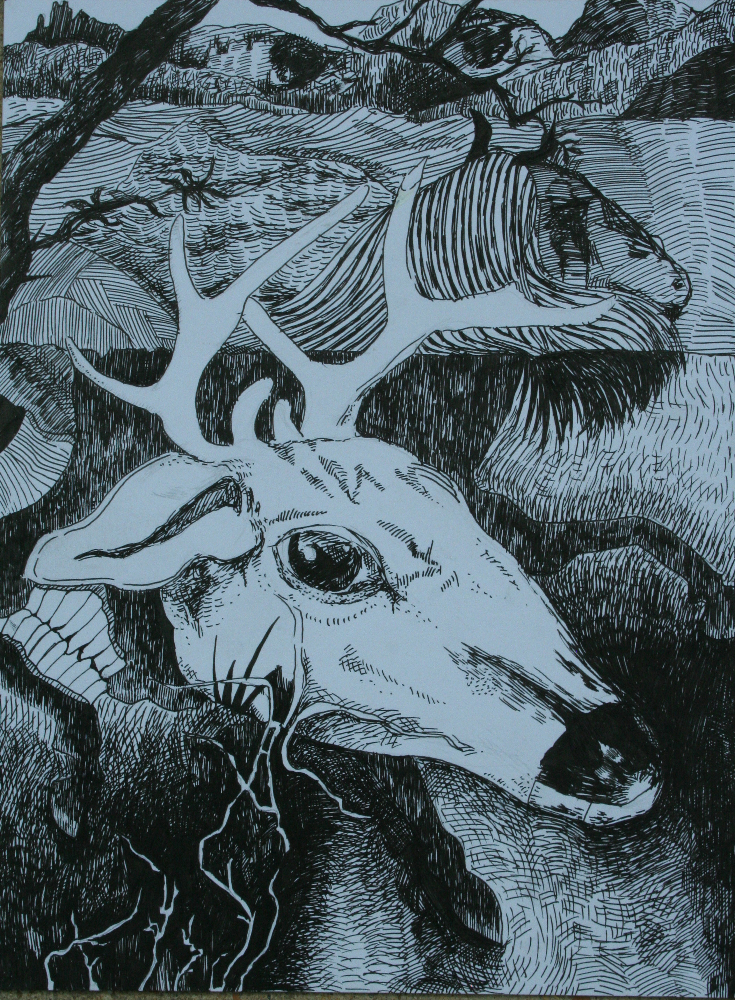
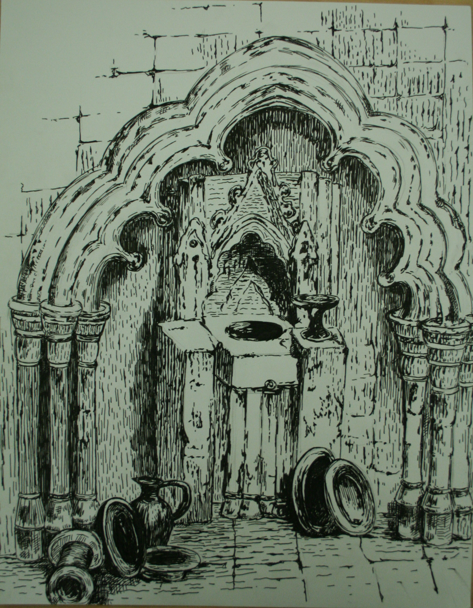

Gallery


Created in 2016 by Harry Zhang. A pen sketch made based on a photo taken by the artist in the Museum of Natural History.


Created in 2014 by Harry Zhang. Inspired by news about global warming and such humanitarian and environmental disasters as water hyacinth pollution, haze/fog air pollution, and growth hormone for chickens. Through the lens of an innocent deer, we shall see the absolute cruelty and "inhumane" aspects of regular human activities.


Created in 2013 by Harry Zhang. It is a still life drawing done in a shabby church. The artist added imagination of his own during the process of creation. By immersing himself in the books, videos, and musics emerged in/or used to document religious reforms and conflicts, the artist is able to better capture and deliver the mood of the environment.